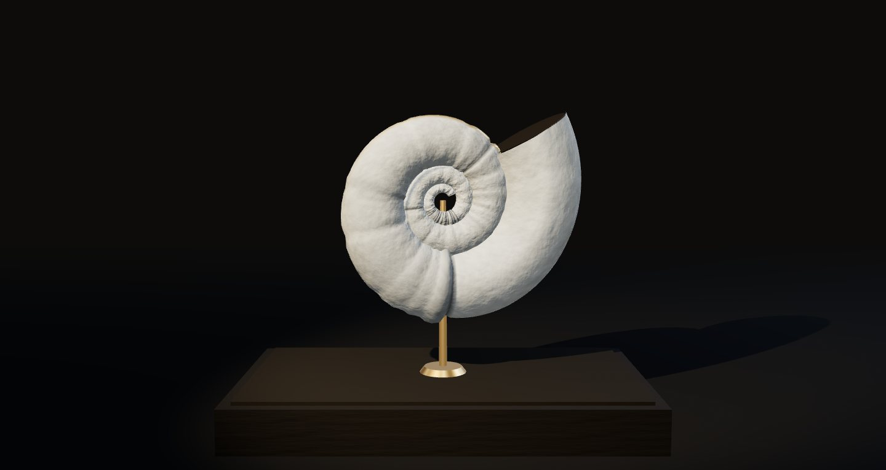

04 / 08 SOUND FOSSIL
聲音化石
《這首歌曾經存在》
一段旋律沉積成可被端詳的物件。最後一個音消失，生長停止，材料仍然記得。
石灰 / 礦脈 / 記憶SOUND IN MOTION

聆聽與創作LISTEN & EXPLORE
00:00
拖曳畫面可旋轉
ABOUT THIS MOVEMENT
這首歌曾經存在
聲音沿著一條對數螺旋沉積成殼。密集的節奏留下細碎的肋紋，長音拉出一條連續的脊線；休止在殼上刻下縫合線。後來的聲音會讀取已經存在的表面：重複的樂句沿著舊脊線再長一次，把它加厚、礦化成金屬色的脈。曲子結束時，留下的是這首歌的完整標本。
玩法與觀看HOW TO PLAY
- 拖曳或用左右方向鍵旋轉標本，靠近看肋紋與脊線。
- 「重播」以同一個 seed 重新長出完全相同的標本；「重新生成」換 seed，得到另一枚。
- 曲終不會自動清空，也不會循環覆寫。
生成與聲音 SOUND & MATERIAL
代表時刻
約 47 秒曲終：生長停止，燈光從工作燈轉為斜側的展示光，標本開始緩慢自轉。第 26 秒起主題重複，可看到舊脊線被加厚並出現金屬光澤。
生成規則
- 材料狀態逐環累積，每一環讀取上一環的表面高度再沉積或刻蝕。
- 短音（節奏）→ 環向細肋與色層；長音 → 依音高落在固定角位的連續脊線；休止 → 縫合線與收縮。
- 重複樂句的沉積量依既有脊線的高度分配，沿舊痕跡再生長並礦化。
- 以 1/120 秒固定步長模擬整首樂譜，同一 seed 與設定得到逐位元相同的標本；播放時依實際音訊時間顯露。沒有跳轉功能，以確保時間與材料歷史一致。
- 幾何預算固定：最多 420 環 × 48 角位。
聲音與技術
three.js r180：自訂頂點屬性控制礦化金屬度、程序化石灰岩凹凸；原生 Web Audio 木琴與擦弦原創曲。
聲音：原創程式作曲，作者 SOUND / 4，以 CC0 釋出；不使用外部錄音。詳見 MUSIC_CREDITS.md。
鍵盤：空白鍵播放／暫停，M 靜音。